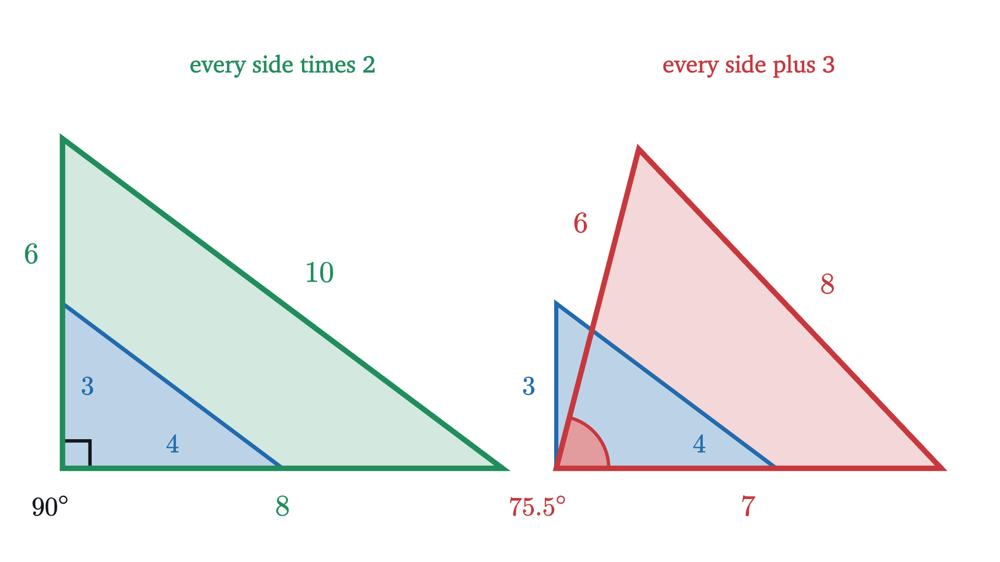
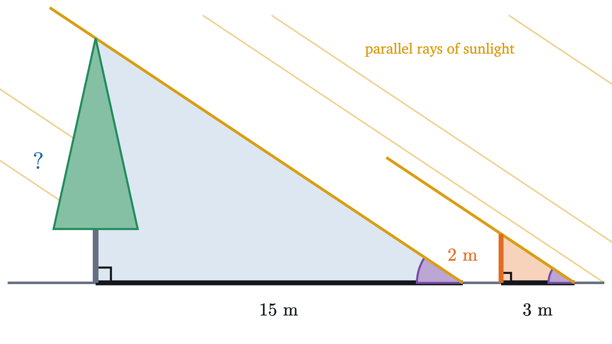
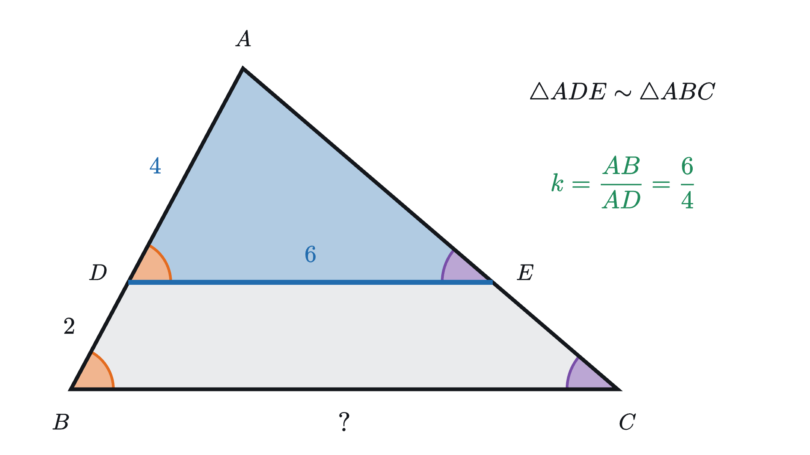
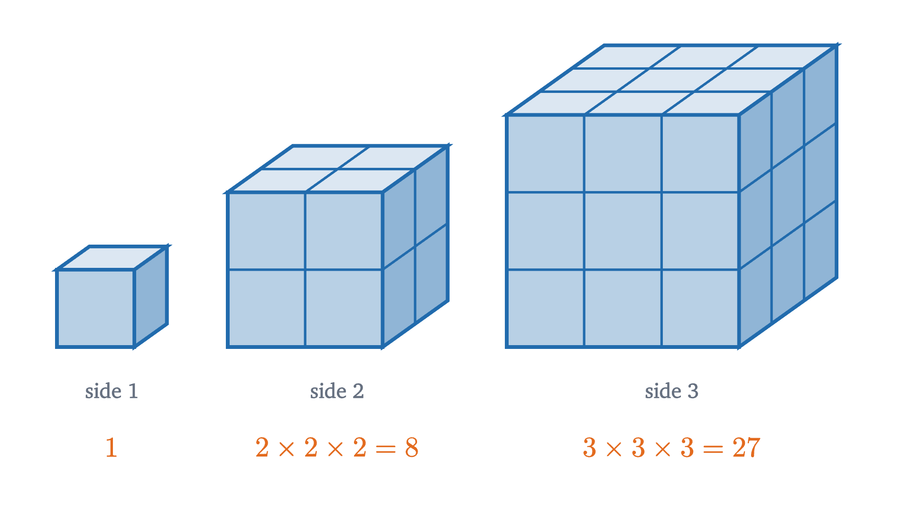
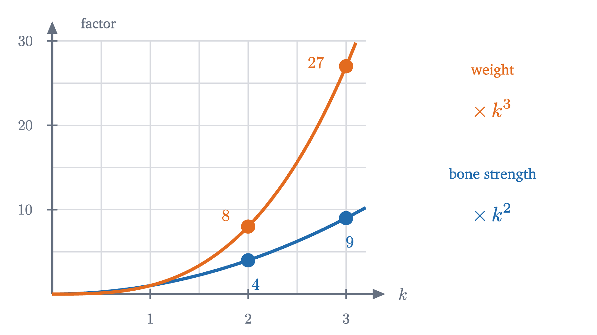
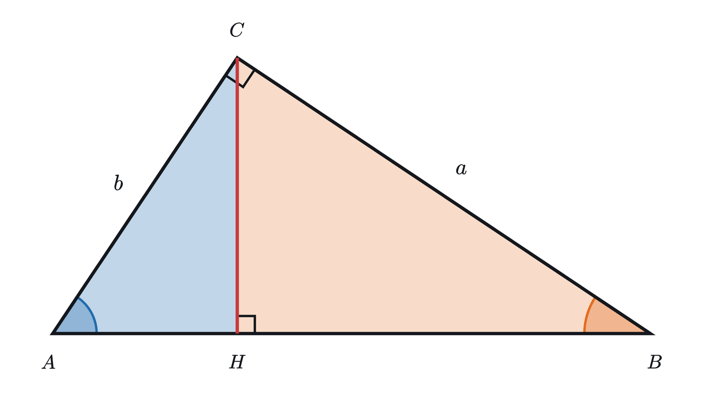

Similar triangles and why area grows as the square
Scaling multiplies every length by one factor and keeps every angle. That explains shadows, maps, and why a pizza twice as wide is four times the pizza.
AssumesWhy the angles of a triangle add to 180°The Pythagorean theorem: a proof you can see
A pizzeria sells a pizza 10 inches across for $8 and one 20 inches across for $16. Twice the width for twice the price sounds like an even trade. Before reading on, decide which one gives more pizza per dollar.
Pause and try
The area of a circle of radius $r$ is $\pi r^2$. Compute the area of each pizza. How many of the small pizzas would it take to match one large one?
Show answerHide answer
The radii are 5 and 10 inches. The small pizza has area $\pi \cdot 5^2 = 25\pi \approx 78.5$ square inches, and the large one has $\pi \cdot 10^2 = 100\pi \approx 314.2$ square inches. The ratio is $100\pi / 25\pi = 4$. The large pizza is four small ones, for the price of two.
So the large pizza costs half as much per bite. The formula $\pi r^2$ for the area of a circle gives the answer without explaining it, and it suggests the 4 has something to do with circles. But a square table 10 units on a side has area 100, and one 20 units on a side has area 400, four times as much again. The 4 comes from the doubling, whatever the shape.
To see why, we first have to say exactly what it means for two shapes to be “the same shape in different sizes”.
What “the same shape, but bigger” means
A projector enlarges a picture by pushing each of its points straight out from the lamp, and we can copy that on paper. Fix a point $O$, the lamp. To enlarge a figure by a factor of 2, move each of its points to twice its distance from $O$ along the same ray. With $O$ at the origin of coordinates, the point $(x, y)$ goes to $(2x, 2y)$.
Pause and try
A triangle has corners $A = (2, 1)$, $B = (5, 1)$ and $C = (3, 3)$. Doubling every coordinate gives a new triangle with corners $A' = (4, 2)$, $B' = (10, 2)$ and $C' = (6, 6)$. Use the distance formula to find the three side lengths of each triangle. What happened to each side?
Show answerHide answer
For the first triangle: $AB = 3$, $AC = \sqrt{1^2 + 2^2} = \sqrt{5} \approx 2.24$, and $BC = \sqrt{2^2 + 2^2} = \sqrt{8} \approx 2.83$. For the second: $A'B' = 6$, $A'C' = \sqrt{2^2 + 4^2} = \sqrt{20} \approx 4.47$, and $B'C' = \sqrt{4^2 + 4^2} = \sqrt{32} \approx 5.66$. Each side of the new triangle is exactly twice the matching side of the old one, including the two slanted sides, which were never mentioned in the recipe.
The animation below does this for every factor between 1 and 2.
At a scale factor of 1.5 the sides read 4.50, 4.24 and 3.35, which are 1.5 times the starting values of 3, 2.83 and 2.24. The gray wedges at the corners keep their size while the triangle grows around them: the angles stay at 63.4°, 45° and 71.6° throughout.
A scale factor larger than 1 enlarges, a factor between 0 and 1 shrinks, and a factor of exactly 1 moves nothing. In coordinates with $O$ at the origin, scaling by $k$ sends $(x, y)$ to $(kx, ky)$, because that point lies on the same ray from the origin and is $k$ times as far out.
Why adding the same amount does not work
The other natural way to make a triangle bigger is to add the same amount to every side, and it fails. Take the triangle with sides 3, 4 and 5, which has a right angle between the two shorter sides. Scaling it by 2 gives sides 6, 8, 10. Suppose that we instead make every side 3 units longer, which also turns the shortest side into 6. The sides are then 6, 7 and 8.

The 6-8-10 triangle still has its right angle, as the converse of the Pythagorean theorem confirms: $6^2 + 8^2 = 100 = 10^2$. The 6-7-8 triangle does not: a right angle between the sides 6 and 7 would force $6^2 + 7^2 = 8^2$ by the Pythagorean theorem, and $85 \ne 64$. That angle is about 75.5°. Adding a fixed amount treats a short side more generously than a long one (3 doubles while 5 grows by only three fifths), and that bends the shape. Multiplying treats every length alike.
Scaling multiplies lengths and keeps angles
Here is the general statement of what the grid figure showed, with a proof.
The proof rests on the distance formula, which is the Pythagorean theorem in coordinates, and on the fact that sliding a figure preserves angles, a basic assumption of plane geometry.
Similar triangles
Two shapes drawn on different sheets of paper do not come with a center $O$ that relates them. So the definition of “same shape” allows the scaled copy to be moved. Recall that two figures are congruent when one can be placed exactly on the other by sliding, turning and, if necessary, flipping it over.
By the theorem, a scaled copy has the same angles and has all sides multiplied by $k$, and moving it around changes neither. So if $\triangle ABC \sim \triangle DEF$ with scale factor $k$, then
That is six facts about a pair of triangles. In practice we go the other way, and want to check as few of them as possible before concluding that the triangles are similar. Two angles are enough.
The third pair of angles takes care of itself, because the angles of a triangle add to 180°: if two angles match, the third must as well. Notice where the equal ratios came from. The scaling theorem supplied them, so the proof assumes nothing about proportional sides.
The equal ratios can be read a second way, the one used most in practice. From $\frac{DE}{AB} = \frac{FD}{CA}$ it follows, by multiplying both sides by $AB$ and dividing by $FD$, that $\frac{DE}{FD} = \frac{AB}{CA}$. So ratios within one triangle equal the matching ratios within the other.
Measuring a tree by its shadow
On a sunny afternoon a tree casts a shadow 15 m long on level ground. Nearby, a vertical pole 2 m tall casts a shadow 3 m long. How tall is the tree?

Pause and try
Find the height of the tree. Say which two triangles you are comparing and why they are similar before you compute anything.
Show answerHide answer
Compare the triangle whose corners are the top of the tree, its foot and the tip of its shadow with the same triangle for the pole. Both have a right angle at the foot, because the tree and the pole are vertical and the ground is level. Both have the same angle at the shadow’s tip, the angle at which sunlight meets the ground, because the sun’s rays are parallel. Two pairs of equal angles make the triangles similar. The scale factor from the pole’s triangle to the tree’s is the ratio of the shadows, $15 / 3 = 5$, so the tree is $5 \times 2 = 10$ m tall.
The ratio inside each triangle gives the same answer: the pole’s height is $\frac{2}{3}$ of its shadow, so the tree’s is too, and $\frac{2}{3} \times 15 = 10$ m.
The answer leaned on the sun’s rays being parallel. Rays from a nearby street lamp spread out, and under one the method fails. We also never needed the angle of the sunlight: the pole measured it for us.
A triangle inside a triangle
Similar triangles often appear nested, and that arrangement produces the most common error in the subject.

Why area goes with the square
Now we can return to the pizza. Scaling by 2 doubled every length, and we want to know what it does to area.
Start with an area we can count. A square 1 unit on a side, scaled by 2, becomes a square 2 units on a side, and that holds $2 \times 2 = 4$ unit squares. Scaled by 3 it holds $3 \times 3 = 9$. Both of its dimensions are multiplied, and area is the product of two dimensions, so the factor enters twice.
Any shape built from unit squares inherits this, cell by cell.
At scale factor 2 each of the 7 cells covers 4 grid squares and the shape covers 28. At scale factor 3 each covers 9 and the shape covers 63. The number of cells never changes and each grows by the factor $k^2$, so the total does too.
A triangle is not made of squares, so let us check that the same factor appears there.
Pause and try
A triangle is scaled by 3. Before stepping through the next figure, predict how many copies of the original triangle are needed to tile the large one. Then predict the count for a scale factor of 2.
Show answerHide answer
Nine copies for a factor of 3, and four for a factor of 2. If you guessed 3 and 2, you counted along one side only. The copies also stack upward, in rows.
The rows hold 1, 3, 5, ... copies from the top down, and the first $k$ odd numbers add up to $k^2$. But the tiling only makes sense when $k$ is a whole number. For a factor like 1.5 or $\sqrt{2}$ there is nothing to count, and we need the formula for the area of a triangle.
For a region with a curved edge, such as a pizza, the same conclusion holds, though what follows is a sketch and not a proof. Lay a fine grid over the region. The grid squares inside it underestimate its area and the squares that touch it overestimate it, as in the lesson on the area of a circle. Scale everything, grid included. Every square’s area is multiplied by $k^2$, so both estimates are, and the true area, trapped between them, must be too. Making this airtight takes the definition of area from calculus. For a circle we can check it directly: scaling the radius $r$ to $kr$ turns $\pi r^2$ into $\pi (kr)^2 = k^2 \cdot \pi r^2$.
That settles the pizzeria. The 20-inch pizza is the 10-inch pizza scaled by 2, so it has $2^2 = 4$ times the area, whatever shape the pizzas are.
Volume goes with the cube
Area picked up two factors of $k$ because it has two dimensions. A solid has three.

A box with edges $a$, $b$ and $c$ has volume $abc$. Scaled by $k$ its edges are $ka$, $kb$ and $kc$, and its volume is $ka \cdot kb \cdot kc = k^3 \cdot abc$. That is a proof for boxes. For a general solid the argument is the sketch given above for curved regions, with small cubes in place of small squares, so the theorem below is stated for all solids and proved only for boxes.
Pause and try
A storybook giant is a man scaled up by 10 in every direction. His weight is proportional to his volume. The load a bone can carry before it breaks is proportional to the area of its cross-section. By what factor does his weight grow, by what factor does the strength of his leg bones grow, and what follows?
Show answerHide answer
His volume, and so his weight, is multiplied by $10^3 = 1000$. The cross-section of each bone is multiplied by $10^2 = 100$, so the bones can carry 100 times the load. The weight on each square centimeter of bone is therefore $1000 / 100 = 10$ times what it is in an ordinary man.

Ten times the stress is fatal. The biologist J. B. S. Haldane made this point in his 1926 essay On Being the Right Size, noting that a human thigh bone breaks under about ten times the weight it normally carries, so a tenfold giant would break his legs with every step.
Run backward, the same law explains the strength of ants: shrinking an animal by a factor $k < 1$ cuts its weight by $k^3$ and the cross-section of its muscles only by $k^2$, so its strength relative to its weight is multiplied by $1/k$.
Where these rules stop
The scale factor must be the same in every direction. Stretch a 2-by-3 rectangle to twice its width while keeping its height, and it becomes a 4-by-3 rectangle. Its area is doubled, from 6 to 12, where a scaling by 2 would have multiplied it by 4, and its diagonal goes from $\sqrt{13} \approx 3.61$ to 5, which is not a doubling.
The angle-angle test is special to triangles. A square and a 1-by-2 rectangle have the same four angles, all 90°, and they are not similar: the ratio of matching sides is 1 on one pair and 2 on the other.
Looking back
The difficulty at the start was a vague phrase, “the same shape”. Scaling from a point made it exact: every distance is multiplied by one factor $k$, and every angle is kept.
The reusable idea is to ask of any quantity how many factors of length it contains. A length has one, an area two and a volume three, and under scaling they pick up $k$, $k^2$ and $k^3$. The next lesson goes back to angles, in a setting where equal angles turn up unexpectedly: points on a circle.
Check yourself
A photograph 10 cm by 15 cm is enlarged to a print 30 cm by 45 cm. How many times as much ink does the print need, assuming ink is spread evenly over the paper?
Problems
Problem 1
Triangles $ABC$ and $DEF$ are similar, with $A$, $B$, $C$ matching $D$, $E$, $F$ in that order. If $AB = 5$, $BC = 7$, $CA = 10$ and $DE = 7.5$, find $EF$ and $FD$.
Show solutionHide solution
The scale factor from $ABC$ to $DEF$ is the ratio of the matching sides $DE$ and $AB$: $k = 7.5 / 5 = 1.5$. So $EF = 1.5 \times BC = 10.5$ and $FD = 1.5 \times CA = 15$.
Problem 2
A person 1.6 m tall casts a shadow 2.4 m long on level ground. At the same moment a flagpole casts a shadow 13.5 m long. How tall is the flagpole?
Show solutionHide solution
The person and the flagpole are vertical, the ground is level, and the sun’s rays are parallel, so each forms a right triangle with its shadow, and the two triangles have the same angle at the shadow’s tip. By the angle-angle test they are similar. In the person’s triangle, height over shadow is $1.6 / 2.4 = 2/3$. The flagpole’s triangle has the same ratio, so its height is $\frac{2}{3} \times 13.5 = 9$ m.
Problem 3
In triangle $ABC$, the point $D$ is on side $AB$ and $E$ is on side $AC$, with $DE$ parallel to $BC$. Given $AD = 3$ and $DB = 6$, and given that triangle $ADE$ has area 5, find the area of triangle $ABC$ and the area of the four-sided region $DBCE$.
Show solutionHide solution
As in the worked example, $\triangle ADE \sim \triangle ABC$: they share the angle at $A$, and $\angle ADE = \angle ABC$ because $DE$ is parallel to $BC$. The matching sides are $AD = 3$ and $AB = 3 + 6 = 9$, so the scale factor is $k = 3$. Areas are multiplied by $k^2 = 9$, so triangle $ABC$ has area $9 \times 5 = 45$. The region $DBCE$ is what remains when the small triangle is removed: $45 - 5 = 40$.
Problem 4
(a) Prove the side-side-side test for similarity: if triangles $ABC$ and $DEF$ satisfy $\frac{DE}{AB} = \frac{EF}{BC} = \frac{FD}{CA}$, then they are similar. You may use the side-side-side criterion for congruent triangles. (b) Use it to decide whether a triangle with sides 6, 8, 12 is similar to one with sides 9, 12, 18, and whether a triangle with sides 4, 5, 6 is similar to one with sides 6, 7, 8.
Show solutionHide solution
(a) Let $k$ be the common value of the three ratios. Scale triangle $ABC$ by $k$ to get a triangle $A'B'C'$. Scaling multiplies every distance by $k$, so $A'B' = k \cdot AB = DE$, $B'C' = k \cdot BC = EF$ and $C'A' = k \cdot CA = FD$. The triangles $A'B'C'$ and $DEF$ have the same three side lengths, so they are congruent by the side-side-side criterion. Thus $DEF$ is congruent to a scaled copy of $ABC$, which is what similar means.
(b) Match the sides in order of size. For the first pair, $9/6 = 1.5$, $12/8 = 1.5$ and $18/12 = 1.5$. The ratios agree, so the triangles are similar. For the second pair, $6/4 = 1.5$, $7/5 = 1.4$ and $8/6 \approx 1.33$. The ratios differ, so the triangles are not similar. (If they were, the shortest side would match the shortest and the longest the longest, since scaling keeps the order of lengths, and the ratios would have to agree.)
Problem 5
A bronze statue is cast from a model at a scale of 1 : 20. The model weighs 4 kg and takes 30 mL of varnish to coat. If the full-size statue is solid, made of the same bronze, and varnished to the same thickness, how much does it weigh and how much varnish does it need?
Show solutionHide solution
The statue is the model scaled by $k = 20$. Weight is proportional to volume, which is multiplied by $20^3 = 8000$: the statue weighs $4 \times 8000 = 32{,}000$ kg, or 32 tonnes. Varnish covers the surface, whose area is multiplied by $20^2 = 400$: the statue needs $30 \times 400 = 12{,}000$ mL, which is 12 liters.
Problem 6
A sheet of paper has the property that when it is cut in half across its longer side, each half is similar to the whole sheet. Find the ratio of its longer side to its shorter side. By what factor are lengths scaled in going from the sheet to a half?
Show solutionHide solution
Let the shorter side be 1 and the longer side be $x > 1$. Cutting across the longer side gives two sheets with sides $1$ and $x/2$. If $x/2$ were the longer of these, the half’s ratio would be $x/2$, which cannot equal $x$. So in the half the longer side is 1 and the shorter is $x/2$, and similarity requires the long-to-short ratios to agree:
The half has longer side 1 where the whole has longer side $\sqrt{2}$, so lengths are scaled by $1/\sqrt{2} \approx 0.707$. Check with areas: the half has half the area, and $k^2 = (1/\sqrt{2})^2 = 1/2$.

Problem 7
The figure above shows a right triangle $ABC$ with its right angle at $C$, legs $a = BC$ and $b = CA$, and hypotenuse $c = AB$. The perpendicular from $C$ meets $AB$ at $H$. (a) Show that triangles $ACH$ and $CBH$ are both similar to triangle $ABC$. (b) Deduce that $AH = b^2/c$ and $HB = a^2/c$. (c) Conclude that $a^2 + b^2 = c^2$. (d) Explain why this is not an independent proof of the Pythagorean theorem here.
Show solutionHide solution
(a) Triangle $ACH$ has a right angle at $H$, and triangle $ABC$ has a right angle at $C$. They share the angle at $A$. By the angle-angle test, $\triangle ACH \sim \triangle ABC$, with $A$ matching $A$, $H$ matching $C$ (the right angles), and so $C$ matching $B$. In the same way triangle $CBH$ has a right angle at $H$ and shares the angle at $B$ with $ABC$, so $\triangle CBH \sim \triangle ABC$ with $B$ matching $B$, $H$ matching $C$ and $C$ matching $A$.
(b) In $\triangle ACH \sim \triangle ABC$, the hypotenuses are $AC = b$ and $AB = c$, so the scale factor from the large triangle to the small is $b/c$. The side $AH$ of the small triangle lies between the corners $A$ and $H$, which match $A$ and $C$, so it matches the side $AC = b$ of the large one. Hence $AH = \frac{b}{c} \cdot b = \frac{b^2}{c}$. In $\triangle CBH \sim \triangle ABC$ the hypotenuses are $CB = a$ and $AB = c$, so the scale factor is $a/c$, and $HB$ matches $CB = a$. Hence $HB = \frac{a}{c} \cdot a = \frac{a^2}{c}$.
(c) The angles at $A$ and $B$ are both less than 90°, so $H$ falls between $A$ and $B$, and $AH + HB = AB$:
Multiplying by $c$ gives $a^2 + b^2 = c^2$.
(d) The angle-angle test rests on the theorem that scaling multiplies distances by $k$, which we proved with the distance formula, and that formula is the Pythagorean theorem. So here the argument is circular. It is a real proof in Euclid’s development, where the proportionality of sides in triangles with equal angles (Proposition 4 of Book VI) is obtained without the Pythagorean theorem.